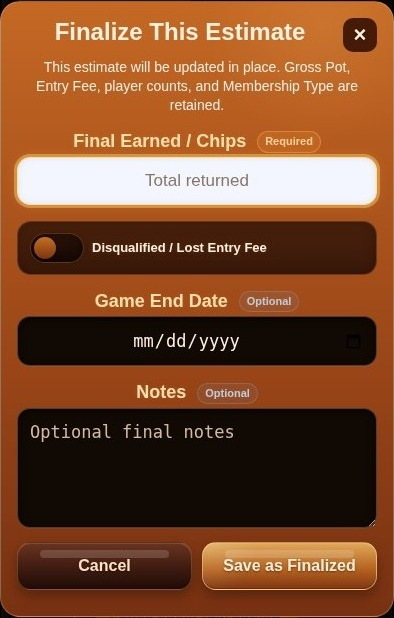
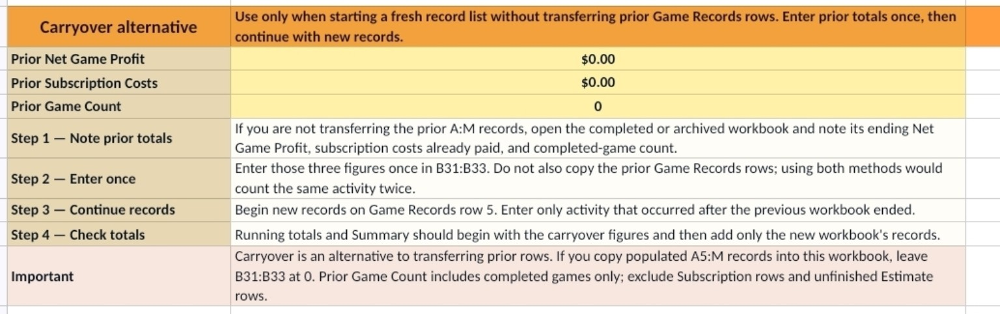
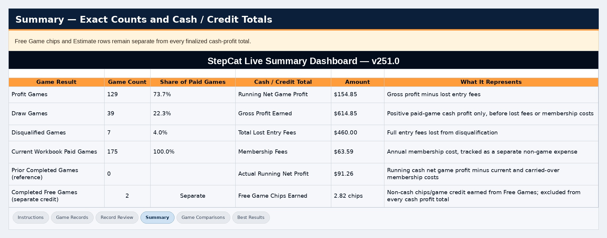
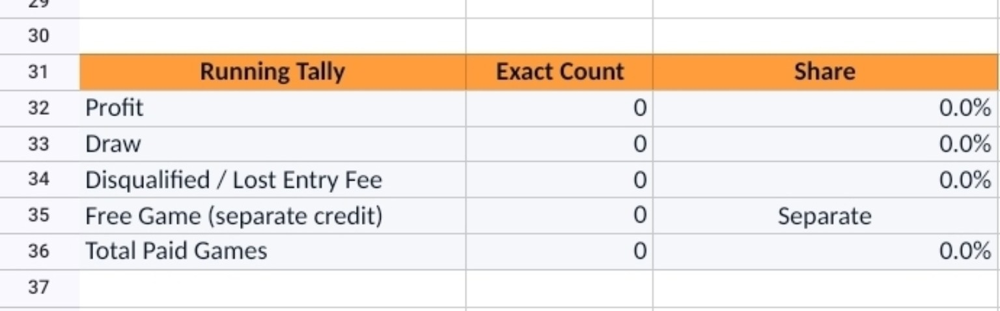
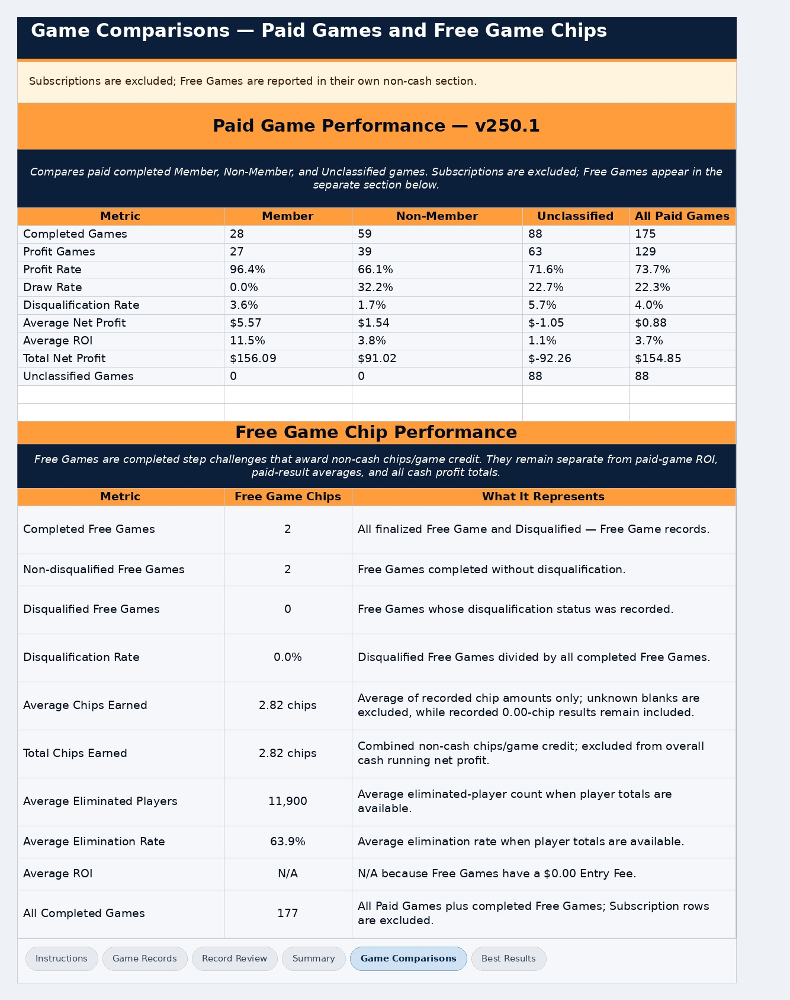
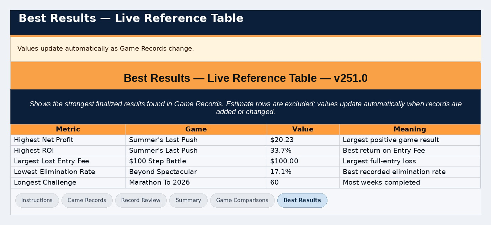
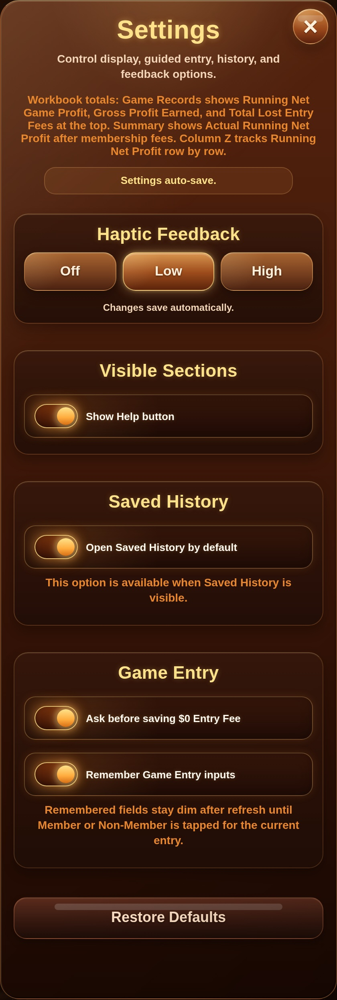
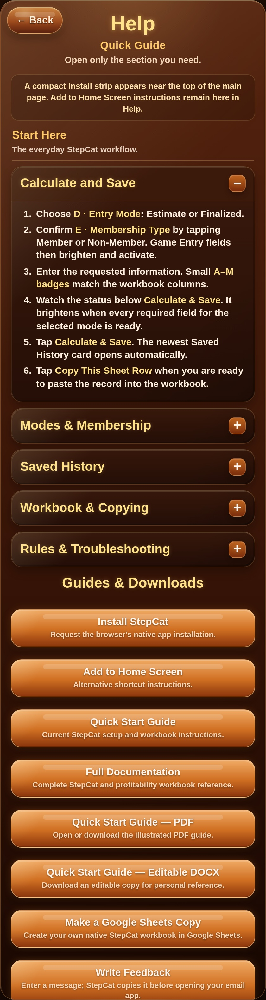
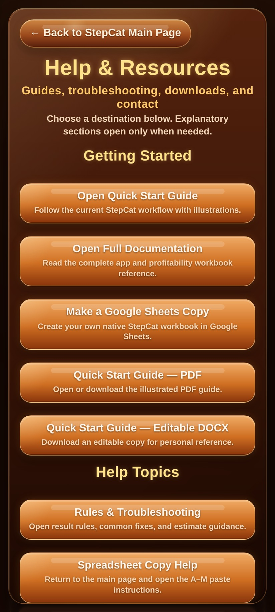
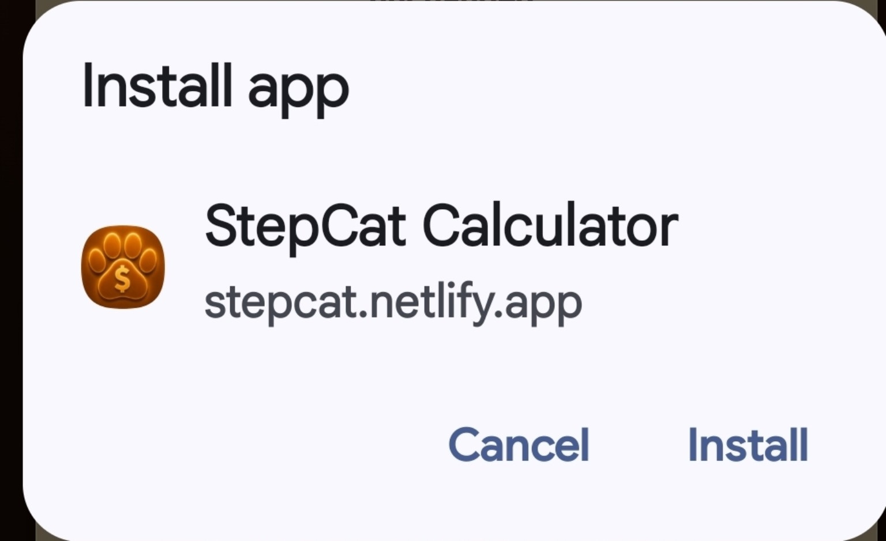

StepCat Quick Start Guide
Quick Start • Illustrated Guide
StepCat Calculator and Workbook v251.1
Follow the current workflow, save a projected or finalized result, and transfer the matching A–M row into the StepCat workbook.
1. Choose Entry Mode first
Tap Estimate for a projection or Finalized for a completed result. Then confirm Member or Non-Member. These are the first required choices.


2. Enter the required calculation fields
Game Entry shows required calculation fields first. Estimate requires Gross Pot, Entry Fee, and Eligible Players. Total Players adds context. Finalized also requires Final Earned unless the record is disqualified. Free Game records require a $0 Entry Fee.

Tap any i information button for field help. Blocking validation still appears beside the affected field, under Calculate & Save, and in one brief toast.
3. Open optional Game & Record Information only when needed
Game Name, dates, Date Format, and Payment / Record Type remain collapsed until needed. Notes stays available for optional details such as a Hybrid cash-and-points breakdown.


4. Complete a Finalized result
In Finalized mode, the disqualification control appears immediately before Final Earned / Chips. Its neutral state reads Not Disqualified. When selected, it turns into a warning state, sets Final Earned to 0.00, and locks the field until switched off.


5. Calculate, save, or begin a new entry
Calculate & Save validates and stores one result, then clears the completed form so it cannot return as an unfinished draft. Start New Entry and Clear Entry ask for confirmation whenever meaningful unsaved content exists. Restore Cleared Fields can recover a deliberately cleared form during the same session.

6. Review or finalize the Saved History card
Estimate cards show projected earnings while Accounting Result and ROI remain N/A. Every Saved History card has a permanent, non-editable StepCat Record ID such as SC-0023. Clear History creates one dated backup; Restore History is available only while Saved History is empty. Tap Finalize This Estimate when the game ends. The dialog updates that same record in place and returns to the updated card.



7. Copy the result into the workbook
Tap Copy This Sheet Row, open Game Records, select the first empty cell in column A, and paste. Named records copy normally. When Game Name was left blank, StepCat uses a unique fallback such as Unnamed Game — SC-0023. Copy All Sheet Rows transfers all saved A–M records without a header row because row 4 already contains workbook headers.


Paste in A–M only. Never overwrite formula columns N–Z.
8. Use the StepCat-themed workbook
The workbook uses the app palette while preserving spreadsheet cues: pale gold/cream for user input, blue-gray for protected formulas, green for Profit, gray for Draw, blue for Estimate, yellow for Free Game, and red for losses or warnings.


9. Enter A–M and leave N–Z intact
Rows 5–504 are formula-ready. Row 505 is the archive boundary. The taller row 4 headers wrap without clipping. Record Review identifies missing information, formula problems, and invalid Free Game rows that contain a non-zero Entry Fee.


10. Read the reports
Summary gives exact Profit, Draw, and Disqualified counts, excludes subscriptions from Games by Result, and tracks membership fees separately. Game Comparisons separates completed paid games from Estimates, Free Games, and subscriptions. Best Results uses readable blank-state messages.




11. Customize Settings and open Help
All setting changes save automatically. Settings can remember Entry Mode, Membership Type, Payment / Record Type, and unfinished Game Entry inputs. Default-open options apply when StepCat next loads or refreshes; they do not override a drawer the user has manually opened or collapsed during the current session. Restore Defaults also returns Haptic Feedback to Low.



12. Install StepCat or send feedback
The main Install StepCat card reports whether installation is available. Its information button explains Add to Home Screen and shortcut alternatives. Installation must be tested from the hosted page. Feedback prepares a message for the user’s email app.



Release note
This corrected v251.1 rebuild adds unsaved-entry confirmation, completed-draft cleanup, permanent SC Record IDs, Free Game fee validation, targeted Estimate-finalization scrolling, safer drawer-state handling, and matching Record Review warnings.